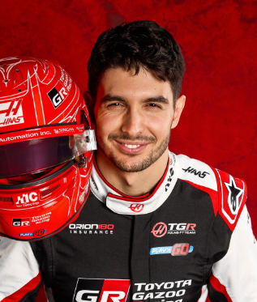

Esteban Ocon
Esteban Ocon
Team: Haas F1 Team
Team Principal: Ayao Komatsu
Number: 31
Nationality: France
Debut: 2016
Born: 17 September 1996
History: French driver Esteban Ocon earned recognition throughout his Formula 1 career for his determination, defensive driving, and consistency in direct wheel-to-wheel battles. His breakthrough victory at the 2021 Hungarian Grand Prix showcased both his composure and ability to capitalize on difficult race situations. After moving to Haas, Ocon brought valuable experience and technical understanding to the American team’s development efforts. By 2026, he remained respected for his work ethic and competitive mentality.
